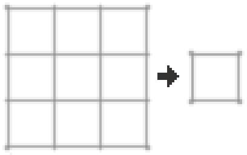

機織り
機織り
機織り は、さまざまな種類の糸を 布 に結合するプロセスです。 織りの最後のステップは 織機 で行われます。羊毛 などの一部の布は 羊系動物 から取得されます。 織るためには 羊毛の糸 を作成する 紡錘 が必要です。

焼成前の紡錘の頭 は粘土から作ることができます。 その後、焼成 して 紡錘の頭 を作成できます。 紡錘を完成させるには、棒 を使ってクラフトします。


8

紡錘で 羊毛 をクラフトすると 羊毛の糸 が得られます。



織機は 木材 と 棒 だけから作成できます。

16

羊毛の布 のレシピには 16本の羊毛の糸 が必要です。 織機への糸の追加は Right Click で行います。 次に、Right Click を押して織機を動かし始めます。 完了したら、Right Click を押してアイテムを回収します。


織機が稼働する過程。
4
8

羊毛の布 は 羊毛ブロック に編み直すことができます。 羊毛ブロックは染色することができます。
24


絹の布 は 糸 から織機で作ることができます。 場合によっては羊毛の布の代用としても使えます。
12


麻布 には使い道がありませんが、ジュートの繊維 から作ることができます。